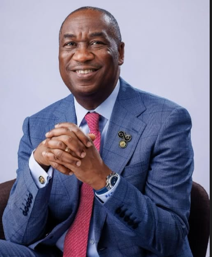

People First
Health, education, safe communities and responsive citizen service.
A Lagos where every community can move forward—and every Lagosian has a part in shaping what comes next.

KOHTWO PUBLIC SERVANTS. ONE LAGOS FUTURE.
The APC ticket pairs Dr. Kadiri Obafemi Hamzat with Princess Damilola Sonayon-James, announced as the party’s deputy-governor candidate for the 2027 Lagos election.
 PHOTO: CULTURE CUSTODIAN ↗
PHOTO: CULTURE CUSTODIAN ↗
APC DEPUTY-GOVERNOR CANDIDATE
A Badagry-born community and party organiser with experience in local government, women’s leadership and sustainability work.
ENGINEER · PUBLIC SERVANT · LAGOSIAN
Dr. Kadiri Obafemi Hamzat brings a systems thinker’s mind and a public servant’s experience to the work of building Lagos.
Trained as an engineer, he has worked across technology, infrastructure and public service—including as Lagos State’s Deputy Governor since 2019. His journey reflects a lifelong connection to the people and possibilities of this state.
Follow his journey ↗A STATE OF EXTRAORDINARY POSSIBILITY
The next chapter of Lagos should be shaped by the people who live it. Our shared ambition: a state that connects its communities, opens doors and works better for everyone.
Health, education, safe communities and responsive citizen service.
Roads, rail, power, water and a cleaner, flood-resilient Lagos.
Enterprise, food, the Blue Economy, culture and technology.
Better public service, digital government and accountability.
Equity for women, young people, elders, children and traders.
Safer communities and a city prepared for climate risks.
Affordable homes, connected transport and lower living costs.
HELP SET THE AGENDA
Tell us which issue should be prioritised for quick intervention in your community. Responses can be sent without your name.
Choose a need, tell us where it is, and describe one practical intervention that would help.
IDEAS IN PUBLIC. ACCOUNTABILITY IN VIEW.
Dr. Hamzat presented his 2027–2031 manifesto at the Wole Soyinka Centre for Culture and Creative Arts, Lagos.
A public debate hosted by the Nigeria Debate Consortium, bringing candidates together to discuss their plans for Lagos.
Past appearances are listed for reference. For newly announced dates, check the campaign’s official event page.
FOLLOW ALONG
Campaign photographs and video coverage, linked to their original publishers. Follow the live social channels for new moments from across Lagos.
Images link to the original posts or reports. Social media embeds may require the visitor’s platform and cookie settings.
A SHARED FUTURE
Lagos moves because its people move it. Our future is strongest when progress reaches beyond the familiar—to every neighbourhood, every generation and every dream.
Be part of the conversation ↗Follow Dr. Hamzat’s public updates, community visits and campaign conversations.
THE HAMZAT–SONAYON-JAMES TICKET · 2027